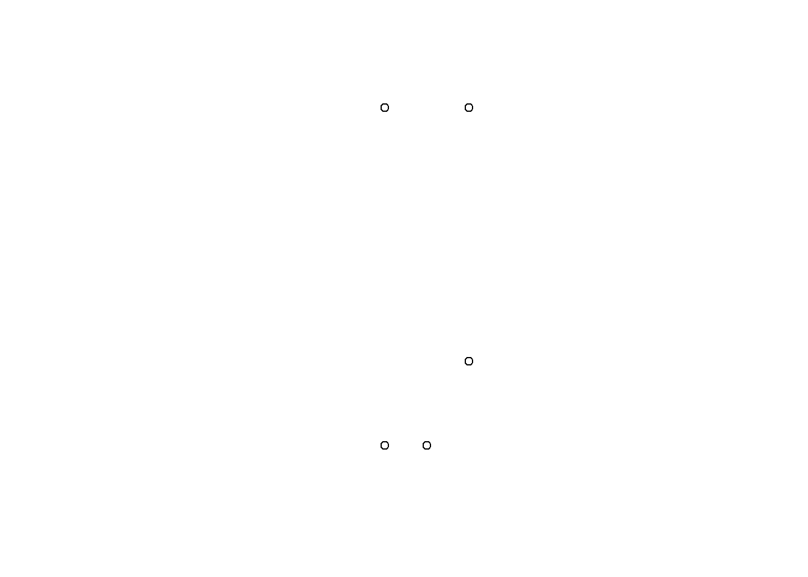
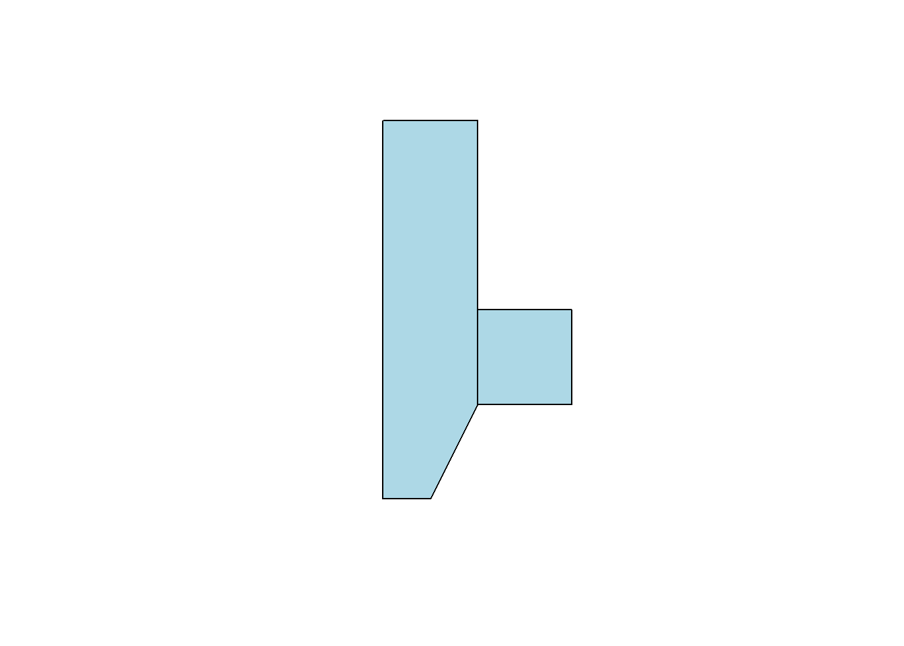
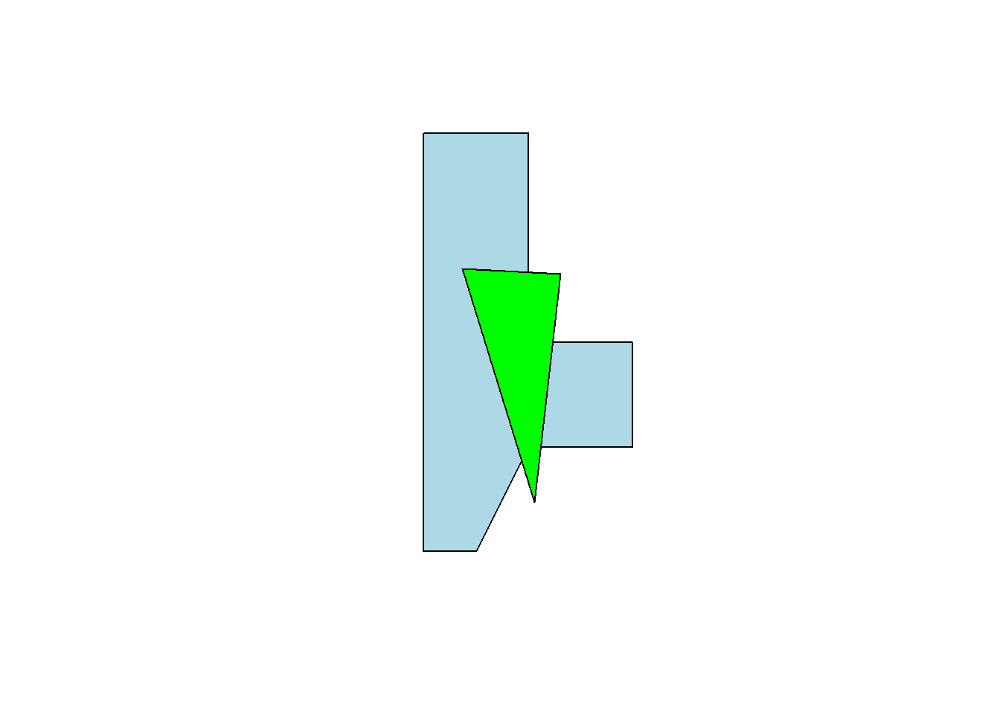
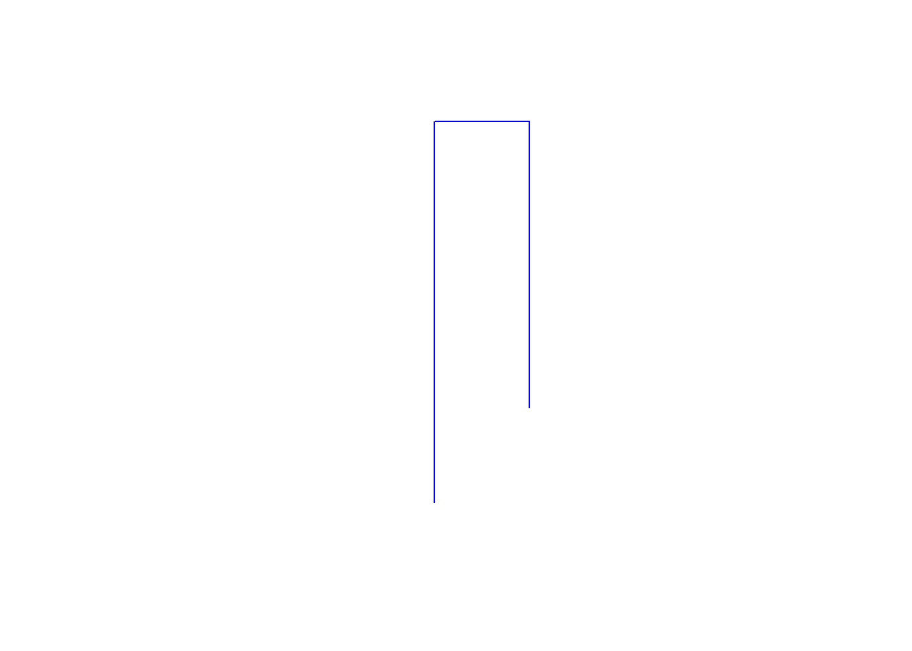
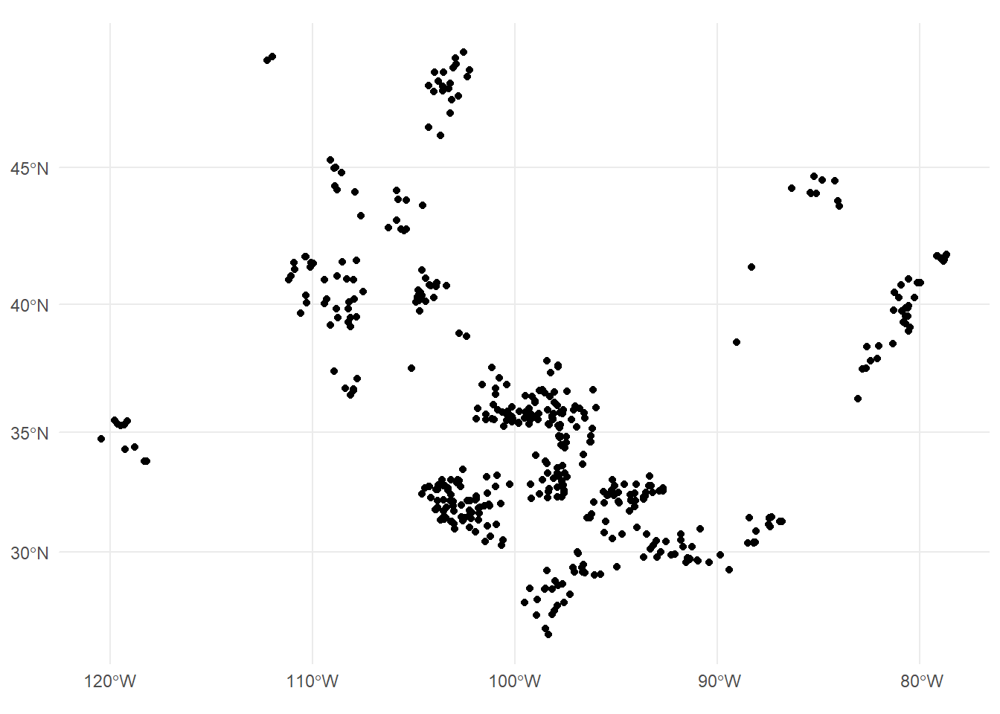
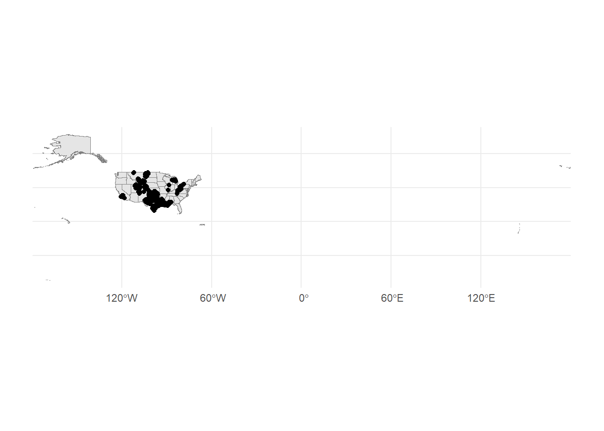
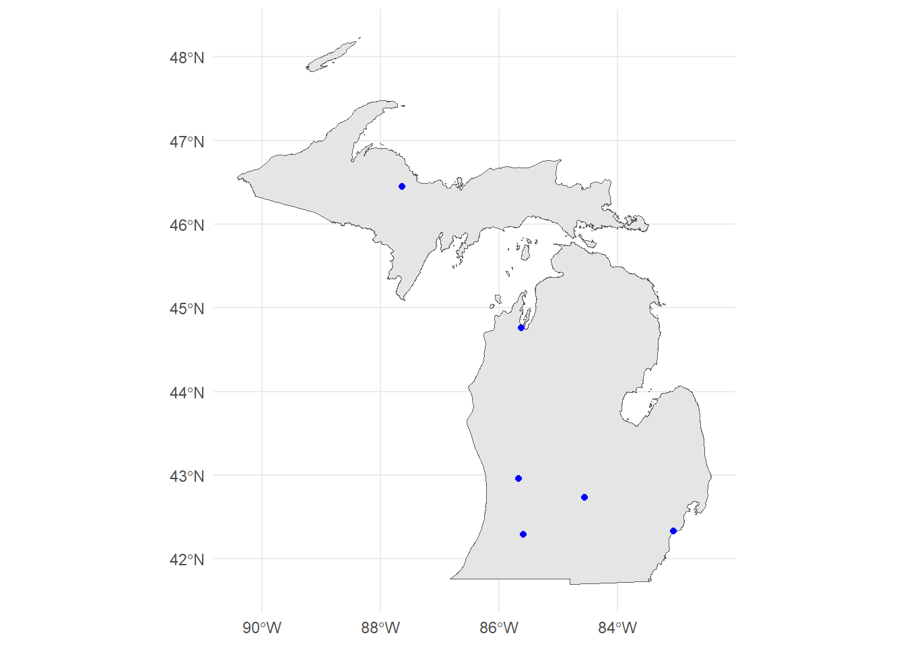
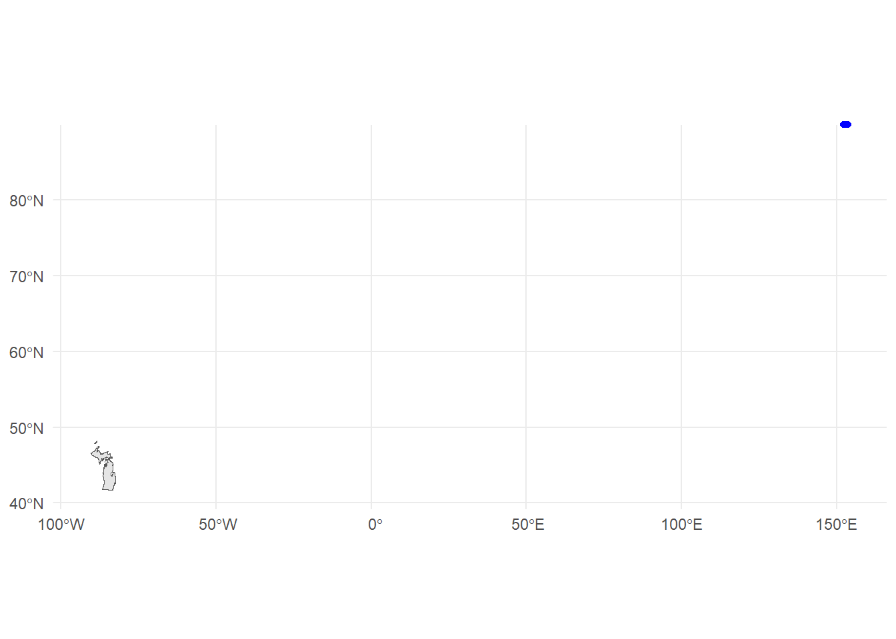

library(sf)
library(mapview)
library(tigris)
library(tidycensus)
library(tidyverse)
library(tmaptools)Geospatial Basics
Required Reading
- This page.
Guiding Questions
- What are the building blocks of geospatial data?
- How do we handle uniquely geospatial properties like distance or spatial correlation?
Geospatial in R
We will need a handful of new packages for our introduction to geospatial analysis in R. The primary package we will interact with is the sf package. sf stands for “simple features.” It has become the standard for geospatial work in R, and relies on the rgeos and rgdal libraries (which are themselves R compilations of the geos and gdal libraries). Documentation of sf can be found here.
We will also use the mapview package. Plus, we’ll use tigris to get state boundaries and tidycensus to pull down census maps. Install those, and any of the many dependencies that they also install.
Vector vs. Raster
There are two ways of storing 2-D mapped spatial data, raster and vector. A vector representation of a 2-D shape is best described as an irregular polygon with points defining vertices. A square plotted in cartesian coordinates is a vector representation. Conversely, a raster image is a grid of cells where each cell is defined as “in” or “out” of the square. Most computer graphics like JPEG and TIFF are raster graphics and each pixel has an assigned color. To make a raster image of a blue square, we’d make a big grid of pixels, and then color some blue based on their location. To make a blue square in vector form, we’d record just the location of the corners and add instructions to color inside the polygon formed by those corners blue.

Vectors are scalable. Rasters are not
Rasters are great for detail, like pixels in a picture, but they do not scale up very well. Vectors are great for things that do need to scale up. They are also smaller and easier to work with when they aren’t trying to replicate photo-realistic images. Vectors can handle curves by recording the properties of the curve (e.g. bezier curves), while rasters have to approximate curves along the grid of cells, so if you want a smooth curve, you need lots of cells.
Geospatial work is almost always done in vectors because (1) it is easier to store data as vectors, and (2) it is easier to manipulate, project, intersect, or connect vector points, lines, and polygons.
We are going to work entirely with vectors today.
Vectors: points, lines, and polygons
Most everything we would want to map can be represented as a point, a line, or a polygon. Points could be the location of power plants in the US, or the location of COVID cases, or the location of major intersections. Lines could be the location of train tracks, the shortest distance between someone’s house and the nearest restaurants, or a major road. Polygons could be county boundaries, landowner’s lot lines, or bodies of water.
We can start by making some points, then turning them into a polygon. We’ll just use arbitrary coordinates for now, but will move into GPS latitude-longitude coordinates shortly. We’ll use st_multipoint to create our points object. It takes a numeric matrix only.
myPoints = tribble(~X, ~Y,
0, 0,
0, 4,
1, 4,
1, 1,
.5, 0,
0, 0)
myPoints = st_multipoint(as.matrix(myPoints))
plot(myPoints)
Making polygons
We’ve begun making our first spatial object! Now, we can turn it into a polygon under one condition: the polygon has to “close” in order for R to know which side is the inside. In myPoints, the last point is identical to the first point, so R will “close” it:
plot(st_polygon(list(myPoints)), col = 'darkgreen')That’s just one polylgon. Let’s add another one. When we created the polygon, we put the points object, myPoints, into a list. If we have a list of, say, two points objects, then we’ll get two polygons:
myPoints2 = tribble(~X, ~Y,
1,1,
2,1,
2,2,
1,2,
1,1)
myPoints2 = st_multipoint(as.matrix(myPoints2))
myPolygons = st_polygon(list(myPoints, myPoints2))
plot(myPolygons, col = 'lightblue')
Now we can see two polygons. Looking at the structure of the polygons:
str(myPolygons)List of 2
$ : 'XY' num [1:6, 1:2] 0 0 1 1 0.5 0 0 4 4 1 ...
..- attr(*, "dimnames")=List of 2
.. ..$ : NULL
.. ..$ : chr [1:2] "X" "Y"
$ : 'XY' num [1:5, 1:2] 1 2 2 1 1 1 1 2 2 1
..- attr(*, "dimnames")=List of 2
.. ..$ : NULL
.. ..$ : chr [1:2] "X" "Y"
- attr(*, "class")= chr [1:3] "XY" "POLYGON" "sfg"Notice that one of the classes is sfg. This is a sf package-defined spatial object.
Getting points on a plot
One little-known trick in R is super helpful in spatial work. If you plot(myPolygons) in your own R-studio console (so it appears in your “Plots” pane, not knit into your document), you can use click(n) to interactively get \(n\) spatial points in the coordinate system of your plot.
myClicks = click(n = 3)
myClicks = rbind(myClicks, myClicks[1,]) # copy the first point to the last point to "close"
myNewPolygon = st_polygon(list(st_multipoint(myClicks)))
plot(myPolygons, col = 'lightblue')
plot(myNewPolygon, col = 'green', add=T)
Making lines
We could also create a line with our points. I’ll leave off the one point we added to “close” the polygon. Note that the line is colored blue, not the (uncompleted) polygon.
myLine = st_linestring(myPoints[1:4,])
plot(myLine, col = 'blue')
Reading spatial data
While it’s fun to draw our own shapes (caution: my definition of fun \(\neq\) your definition of fun), we’re probably most interested in finding and using existing spatial data. Let’s talk briefly about the types of spatial data out there:
- Shapefiles
- Shapefiles are not actually single files - they’re usually 4-6 files with similar names and different suffixes like .dbf, .shx, etc. This is because the shapefile format kind of pre-dates our current way of thinking of file storage. The most common program for reading or making shapefiles is ESRI’s ArcGIS. It is expensive, cumbersome, and some may say bloated. Our goal in this section is to be able to rescue shapefiles from the clutches of ArcGIS and open them in R
- GEOJSON
- JSON is a way of structuring text data (like a .csv) but with the potential for nests in the data (like our
listobject) where each nest has a different data structure. GEOJSON pairs this with WKT or Well-Known Text representations of coordinates and takes care of making sure that each observation in the JSON data has a corresponding polygon in WKT coordinates.
- JSON is a way of structuring text data (like a .csv) but with the potential for nests in the data (like our
- KML
- Bare-bones storage of coordinates and basic data
- .RDS
- Okay, this is just R’s native data type for storage, but it’s really helpful for storing
sfobjects
- Okay, this is just R’s native data type for storage, but it’s really helpful for storing
- Comma separated values (.csv)
- Just like the CSV’s we’ve been using, but with Latitude and Longitude columns. Only works for points (one point per .csv line), but is very commonly found. We can use
st_as_sfto tell R which columns are the latitude and longitude.
- Just like the CSV’s we’ve been using, but with Latitude and Longitude columns. Only works for points (one point per .csv line), but is very commonly found. We can use
We can open and use any one of these filetypes. I will cover Shapefiles and GEOJSON as the latter has become a very popular way of sharing spatial datasets.
Where to find spatial data
Spatial data is all around us! Try searching google for a topic + “spatial shapefile”.
One of my favorite sources for spatial data is the DHS HIFLD Open database, which has lots of government datasets that are well-organized by category. Click through, choose the “open” database, and when you find something you like, click the “Download” button.
As of November 2025, this dataset has been taken offline. I have a copy of the publicly available geojson file so that I can continue to use this lesson. You can load it from this link.
We’ll have more on finding data in our course.
Loading the data
We’ll use the sf package’s st_read to open spatial data. Here, I’m loading the Natural Gas Processing Plants data from the Energy section of HIFLD. I’m using the GeoJSON option, which st_read() knows how to handle:
# gasplants = st_read('https://services7.arcgis.com/FGr1D95XCGALKXqM/arcgis/rest/services/NaturalGas_ProcessingPlants_US_EIA/FeatureServer/23/query?outFields=*&where=1%3D1&f=geojson') %>%
# dplyr::select(name = Plant_Name)
gasplants = st_read('https://ec242.netlify.app/data/natural-gas-processing-plants.geojson') %>%
dplyr::select(name = Plant_Name)
head(gasplants)Reading layer `natural-gas-processing-plants' from data source
`D:\Courses\EC242\data\natural-gas-processing-plants.geojson'
using driver `GeoJSON'
Simple feature collection with 478 features and 18 fields
Geometry type: POINT
Dimension: XY
Bounding box: xmin: -13406520 ymin: 3051341 xmax: -8756291 ymax: 6253451
Projected CRS: WGS 84 / Pseudo-MercatorSimple feature collection with 6 features and 1 field
Geometry type: POINT
Dimension: XY
Bounding box: xmin: -12463310 ymin: 3671704 xmax: -10633020 ymax: 6230586
Projected CRS: WGS 84 / Pseudo-Mercator
name geometry
1 50 Buttes Processing Facility POINT (-11775135 5442621)
2 Ajax Plant POINT (-11144891 4238385)
3 Alamo POINT (-10633021 3671704)
4 Allison Gas Plant POINT (-11148100 4248273)
5 Aloe Ventures POINT (-12463309 6230586)
6 Altamont Gas Plant POINT (-12281771 4918113)The sf data type holds both the data (which here is just the name of the plant) and the “geometry”, which are the points. It’s tidy data - one row is one observation of one plant, and each row has a set of coordinates telling us where to find the plant.
We can use ggplot with geom_sf() to plot these points. They’re just scattered across the country and we don’t automatically get a background map, but here are the points
ggplot(gasplants) + geom_sf() + theme_minimal()
Well, we’re missing some context here – we can kind of make out the point of Texas down there, but it’s hard to tell anything about where these plants are located. Let’s use tigris to get a map of the US, then plot it plus the points. Note we use different data = in each of the geom_sf() calls:
US <- tigris::states(cb = TRUE, progress_bar = FALSE) # tigris maps
ggplot() + geom_sf(data = US, col = 'gray50') +
geom_sf(data = gasplants) + theme_minimal()
Getting there. The problem now is that the tigris data covers all US territories, which are really spread out! Let’s drop down to just Michigan. We can use good old filter just like with regular data:
MI = tigris::states(cb = TRUE) %>% dplyr::filter(STUSPS=='MI')
ggplot() + geom_sf(data = MI, col = 'gray50') +
geom_sf(data = gasplants) + theme_minimal()
Well, now we have a different problem. We want to have only the gasplants that are over the state of Michigan. That requires a spatial join. Luckily, our tidyverse syntax works pretty seamlessly on sf objects. First, we have to take care of a little issue with spatial data. The projection
Projections, briefly
The projection for spatial data is the translation from a 3-D object (e.g. the globe) to a 2-D space (a map, or the cartesian x-y coordinates of our screen). This is no simple matter! There are entire PhD programs dedicated to forming and processing projections and datum (which refer to the shape of the globe, which is not actually round). It can all be a nightmare. Worst of all, projections determine the definition of your coordinates, so you may be at -81 latitude, +30 longitude, but in another projection, you might be 1245349m above some reference point, and -2452849m to the left of that point. Projections define the distance along the X and Y axis, the scale of the coordinates, and a lot of other stuff about your 2-D polygons.
Luckily, over the last few years, very smart people have been working on regularizing “projections”. Now, we really need to know three things:
- The projection of your data’s coordinates when you read it in
- The projection you want your data to be in when you map it
- The projection of other spatial data you may want to combine.
Importing projected data
GEOJSON, shapefiles, and KML files usually come with embedded projections stored as EPSG numbers like ‘4326’ (incidentally, ‘4326’ is the usual projection for GPS coordinates). Thus, the first one is usually already taken care of. If your data doesnt have a PROJ4 or EPSG number but the coordinates are all between -180 and +180, it’s likely in EPSG=4326. If none of those, then the data creator should have metadata stating the proejction. It might take some googling and some trial and error.
For mapping, you might need to transform your data between projections (or “reproject” it, same thing). We use st_transform for this. We only need to give R the EPSG (Geodetic Parameter Dataset) of the projection you want to end up in. As long as it’s already in a known projection, R can re-project it. The projection is refered to by the Coordinate Reference System (CRS). st_crs will tell us the projection (EPSG number and a lot more) of any spatial object. If they do not match, then R will give an error or, worse, plot them on totally different scales - sometimes you end up with points from the US landing in the middle of the Indian Ocean! In fact, look back at our map of gas plants and the US.
st_crs(gasplants)Coordinate Reference System:
User input: WGS 84 / Pseudo-Mercator
wkt:
PROJCRS["WGS 84 / Pseudo-Mercator",
BASEGEOGCRS["WGS 84",
ENSEMBLE["World Geodetic System 1984 ensemble",
MEMBER["World Geodetic System 1984 (Transit)"],
MEMBER["World Geodetic System 1984 (G730)"],
MEMBER["World Geodetic System 1984 (G873)"],
MEMBER["World Geodetic System 1984 (G1150)"],
MEMBER["World Geodetic System 1984 (G1674)"],
MEMBER["World Geodetic System 1984 (G1762)"],
MEMBER["World Geodetic System 1984 (G2139)"],
ELLIPSOID["WGS 84",6378137,298.257223563,
LENGTHUNIT["metre",1]],
ENSEMBLEACCURACY[2.0]],
PRIMEM["Greenwich",0,
ANGLEUNIT["degree",0.0174532925199433]],
ID["EPSG",4326]],
CONVERSION["Popular Visualisation Pseudo-Mercator",
METHOD["Popular Visualisation Pseudo Mercator",
ID["EPSG",1024]],
PARAMETER["Latitude of natural origin",0,
ANGLEUNIT["degree",0.0174532925199433],
ID["EPSG",8801]],
PARAMETER["Longitude of natural origin",0,
ANGLEUNIT["degree",0.0174532925199433],
ID["EPSG",8802]],
PARAMETER["False easting",0,
LENGTHUNIT["metre",1],
ID["EPSG",8806]],
PARAMETER["False northing",0,
LENGTHUNIT["metre",1],
ID["EPSG",8807]]],
CS[Cartesian,2],
AXIS["easting (X)",east,
ORDER[1],
LENGTHUNIT["metre",1]],
AXIS["northing (Y)",north,
ORDER[2],
LENGTHUNIT["metre",1]],
USAGE[
SCOPE["Web mapping and visualisation."],
AREA["World between 85.06°S and 85.06°N."],
BBOX[-85.06,-180,85.06,180]],
ID["EPSG",3857]]st_crs(MI)Coordinate Reference System:
User input: NAD83
wkt:
GEOGCRS["NAD83",
DATUM["North American Datum 1983",
ELLIPSOID["GRS 1980",6378137,298.257222101,
LENGTHUNIT["metre",1]]],
PRIMEM["Greenwich",0,
ANGLEUNIT["degree",0.0174532925199433]],
CS[ellipsoidal,2],
AXIS["latitude",north,
ORDER[1],
ANGLEUNIT["degree",0.0174532925199433]],
AXIS["longitude",east,
ORDER[2],
ANGLEUNIT["degree",0.0174532925199433]],
ID["EPSG",4269]]gasplants from HIFLD is in EPSG: 4326, the map of MI is in EPSG: 4269. We can use st_transform on the gasplants data, which will reproject the points (and won’t change the data at all). The data won’t be any different, and the points won’t look too much different
gasplants = gasplants %>%
st_transform(crs=4269)
ggplot(gasplants) + geom_sf() + theme_minimal()
But in a bit, when we spatially join, we’ll avoid an error.
Importing unprojected data
Sometimes, we have data only in .csv format, but with X and Y coordinates (e.g. Longitude and Latitude). To import this data, we do the following:
- Read in from .csv, .xls, etc.
- Determine the CRS of the data (usually 4326 for gps coordinates)
- Set the spatial coordinates and CRS
We know how to do the first, and the 2nd and 3rd are done in one step. We’ll make a data.frame of city names and use the tmaptools package’s geocode_OSM to get the latitudes and longitudes of the city centers. This function uses open-source Open Street Maps instead of the google API (which is used by ggmap). This way, we don’t need an API key.
ourCities = geocode_OSM(c('Detroit','Lansing','Grand Rapids','Kalamazoo','Traverse City','Marquette')) %>%
select(City = query, lat = lat, lon = lon)
head(ourCities) City lat lon
1 Detroit 42.33155 -83.04664
2 Lansing 42.73383 -84.55463
3 Grand Rapids 42.96324 -85.66786
4 Kalamazoo 42.29171 -85.58723
5 Traverse City 44.76065 -85.61660
6 Marquette 46.44815 -87.63059Since these are GPS-type coordinates, we are going to assume the CRS is EPSG=4326. Longitude is the “x” axis, and latitude is the “y” axis.
ourCities.spatial = st_as_sf(ourCities, coords = c('lon','lat'), crs = 4326)
head(ourCities.spatial)Simple feature collection with 6 features and 1 field
Geometry type: POINT
Dimension: XY
Bounding box: xmin: -87.63059 ymin: 42.29171 xmax: -83.04664 ymax: 46.44815
Geodetic CRS: WGS 84
City geometry
1 Detroit POINT (-83.04664 42.33155)
2 Lansing POINT (-84.55463 42.73383)
3 Grand Rapids POINT (-85.66786 42.96324)
4 Kalamazoo POINT (-85.58723 42.29171)
5 Traverse City POINT (-85.6166 44.76065)
6 Marquette POINT (-87.63059 46.44815)Now we have the point geometries! We can map this:
ggplot() +
geom_sf(data = MI, fill = 'gray90') +
geom_sf(data = ourCities.spatial, col = 'blue') +
theme_minimal()
Mis-projected data
Let’s see a bad example that assumes the wrong projection when importing ourCities.spatial:
ourCities.spatial.bad = st_as_sf(ourCities, coords = c('lon','lat'), crs = 4000)
ggplot() +
geom_sf(data = MI, fill = 'gray90') +
geom_sf(data = ourCities.spatial.bad, col = 'blue') +
theme_minimal()
Ope! That sure doesn’t look right. The wrong projection can derail a project. Luckily, most shapefiles we find in the wild have the projection (CRS) attached. Now you know what a bad one looks like. Back to our correctly-projected data.